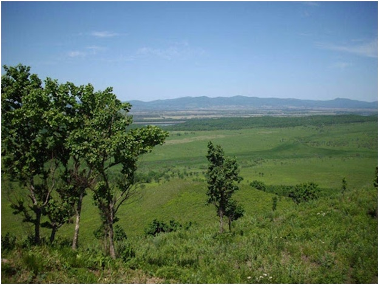
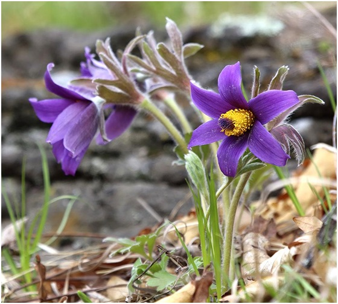

11. Памятник природы «Гора Филиппова»
Памятник природы областного значения «Гора Филиппова» образован для сохранения растительного сообщества с элементами даурской остепненной флоры в составе ландшафтного комплекса горы Филиппова — места обитания растений, нуждающихся в особой охране и занесенных в Красную книгу Российской Федерации и Красную книгу Еврейской автономной области. Памятник природы расположен в 5 километрах к северу от села Екатерино-Никольское.
Южные склоны горы Филиппова пологие, покрыты низкорослым кустарником. Северные склоны и склоны восточной экспозиции покрыты редкостойным дубняком с березой даурской. В средней части этих склонов присутствуют скальные обнажения, значительные по площади. На западных и северо-западных склонах сформировались кустарниковые заросли с преобладанием лещины разнолистной. Верхний пояс горного образования покрыт травянистой растительностью ксерофитного (засухоустойчивого) типа.
Редкими и требующих особой охраны: трехбородник китайский ковыль байкальский, шлемник байкальский (занесены в Красную книгу РФ и Красную книгу ЕАО), прострел китайский, секуринега полукустарниковая и др.


Прострел китайский Pulsatilla chinensis